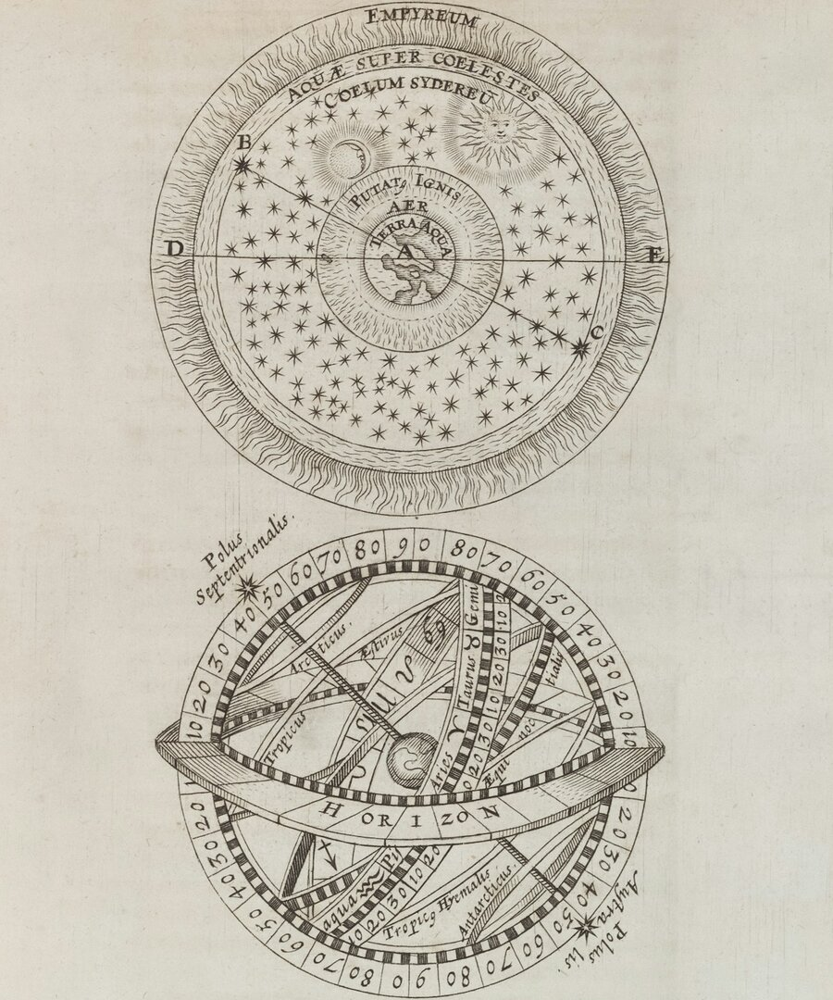

Сделать ли этот шаг?
Решение, вокруг которого вы ходите по кругу: работа, переезд, предложение, которое важно прочитать ясно, чтобы вы могли выбрать увереннее.
Один ясный вопрос, один сфокусированный ответ, прочитанный по карте, построенной на тот самый момент, когда вы спрашиваете.
Хорарный разбор отвечает на один конкретный вопрос по карте, построенной на момент, когда вопрос осознан и задан. Он для самых насущных дел: соглашаться ли на эту работу, где потерянная вещь, продастся ли это, пришло ли время действовать. Для него вовсе не нужны ваши данные рождения, нужен только искренний вопрос и момент, когда он задан, и потому это самый сфокусированный разбор из тех, что предлагает Ольга.

Хорарная астрология — это одна из старейших ветвей астрологии и одна из самых практичных. Вместо того чтобы охватывать всю вашу жизнь, она отвечает на один конкретный вопрос по карте, построенной на тот самый момент, когда этот вопрос осознан и задан. Этот момент и становится картой, а карта хранит ответ. Это астрология, обращённая к одному ясному делу, здесь и сейчас.
Хорарный разбор необычен тем, что вовсе не опирается на ваши данные рождения. Вам не нужно знать время своего рождения, свой асцендент или всю карту целиком. Нужен лишь искренний вопрос, который по-настоящему вам важен, и момент, в который вы его приносите. Именно поэтому так много людей обращаются к хорарной астрологии, когда что-то не терпит отлагательств и им просто нужен сфокусированный ответ, а не полный разбор жизни.
Важно быть честными в том, что даёт этот разбор. Хорарная астрология даёт вам ясное прочтение ситуации и взвешенные рекомендации, на которые можно опереться, а не гарантию будущего. Она покажет вам настоящие очертания дела, кто и что в нём задействовано и наиболее вероятное направление событий, чтобы вы могли решать с большей ясностью и меньшими догадками. Лучше всего она работает с одним ясным вопросом за раз.
Одна карта, прочитанная вокруг одного вопроса, ведь хорарная астрология наиболее точна, когда остаётся сфокусированной.
Решение, вокруг которого вы ходите по кругу: работа, переезд, предложение, которое важно прочитать ясно, чтобы вы могли выбрать увереннее.
Найти пропавший предмет, затерявшийся документ или понять, найдётся ли он вообще: это одно из старейших применений хорарной астрологии.
Когда всё решает время, хорарная астрология читает, благоприятствует ли момент действию сейчас или стоит немного подождать.
Сделка, продажа, заявка или план: наиболее вероятный исход, которого вы ждёте.
Запутанная ситуация между людьми, где вы чувствуете больше, чем можете увидеть, которую важно назвать честно.
Выбор, который просит вас взять на себя обязательство в любви, деньгах или работе, который стоит трезво взвесить, когда вы и сами не уверены.
Не нужно собирать данные рождения и готовить что-либо, кроме одного ясного вопроса. Вот как всё проходит, от начала и до конца.
Напишите мне с одним искренним вопросом, который по-настоящему вам важен. Данные рождения не нужны, и всё останется конфиденциальным.
Она строит карту на тот самый момент, когда ваш вопрос дошёл до Ольги, и разбирает её вручную, без автоматических генераторов, заранее, до вашей консультации.
Мы встречаемся онлайн, индивидуально. Ольга простым языком читает ответ и его контекст, и вы можете спрашивать о чём угодно по ходу разговора.
Вы уйдёте с ясным прочтением ситуации и взвешенными рекомендациями, на которые можно опереться, и к которым сможете возвращаться ещё долго после окончания консультации.
Сомневаетесь, подходит ли это вам? Расскажите Ольге свой вопрос, и она честно подскажет, с чего лучше начать, даже если это будет другой разбор.

Каждый хорарный разбор на этом сайте строит и интерпретирует сама Ольга, а не программа и не шаблон.
Ольга, профессиональный астролог, работает с каждым клиентом индивидуально. Её подход тёплый, но основательный: ясные, практичные рекомендации, рождённые из карты вашего вопроса, всегда конфиденциальные и написанные именно для того человека, который к ней обратился. С первого вашего сообщения и до самого ответа вы работаете напрямую с ней.
То, что чаще всего хотят узнать перед тем, как записаться на хорарный разбор.
Хорарный разбор — это личная консультация, которая отвечает на один конкретный вопрос по карте, построенной на тот самый момент, когда вопрос осознан и задан. Вместо того чтобы охватывать всю вашу жизнь, он сосредоточен на одном деле и читает ситуацию, вовлечённых людей и вероятное направление событий простым языком.
Нет. Хорарная астрология необычна тем, что вовсе не использует вашу натальную карту. Карта строится на момент, когда Ольга получает ваш вопрос, а не на момент вашего рождения. Всё, что нужно Ольге, — это один ясный, искренний вопрос и время, когда он до неё дошёл. Всё, чем вы делитесь, остаётся личным и конфиденциальным.
Один ясный, конкретный вопрос, который по-настоящему вам важен: соглашаться ли на эту работу, где потерянная вещь, продастся ли это, подходящее ли сейчас время действовать, что на самом деле происходит. Хорарная астрология лучше всего работает с одним искренним вопросом, а не с широкой темой. Если их несколько, Ольга поможет выбрать самый важный.
Нет, и Ольга никогда не станет делать вид, будто это так. Хорарный разбор даёт ясное прочтение ситуации и честные рекомендации, на которые можно опереться, а не гарантию будущего. Он показывает вам очертания дела и наиболее вероятное направление, чтобы вы могли решать с большей ясностью и меньшими догадками.
Хорарная астрология наиболее точна, когда за раз задан один ясный вопрос, ведь вся карта читается вокруг этого единственного дела. Если вы приходите с клубком тревог, Ольга поможет найти настоящий вопрос, который скрыт под ними. Для более широких жизненных тем лучше подойдёт разбор натальной карты или прогноз.
Поскольку данные рождения не требуются, хорарный разбор хорошо подходит для срочных дел. Как только Ольга получает ваш вопрос, она строит карту на этот момент и внимательно её читает, а затем встречается с вами онлайн, чтобы разобрать ответ. Это самый сфокусированный и быстрый разбор из тех, что она предлагает.
Хорарная астрология отвечает на один вопрос. Когда вам нужна картина шире, эти разборы идут дальше.
Для картины пошире: вся ваша карта целиком, а не один вопрос.
ПодробнееКогда вопрос о времени, прогноз читает предстоящий год целиком.
ПодробнееЕсли вопрос о том, где жить или куда переехать, астрокартография идёт глубже.
ПодробнееХотите ещё и полный разбор натальной карты? Сначала уточните точное время рождения.
ПодробнееПринесите один ясный, искренний вопрос. Ваш разбор личный, конфиденциальный и проходит онлайн, где бы вы ни находились.
Записаться на разбор Все консультации